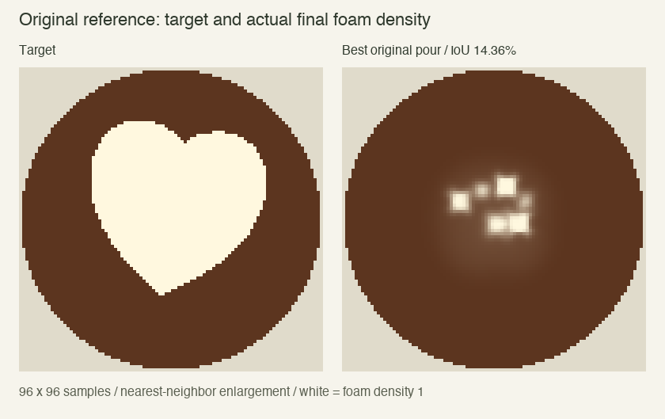
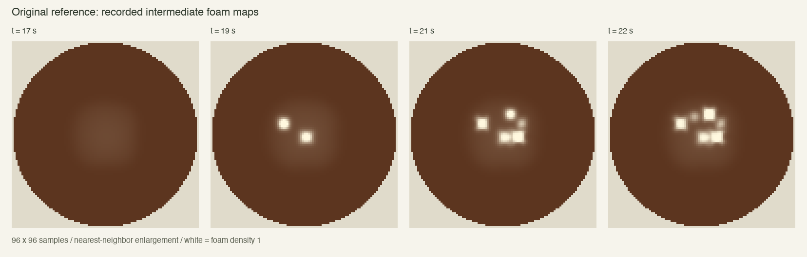
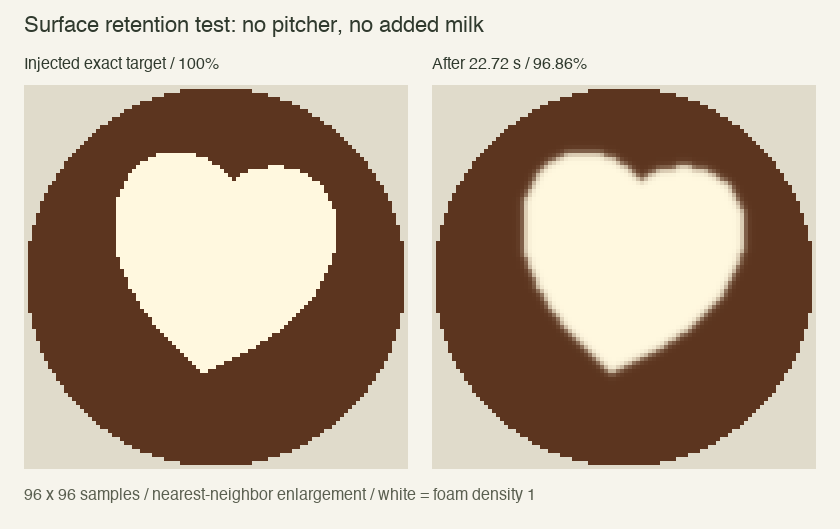
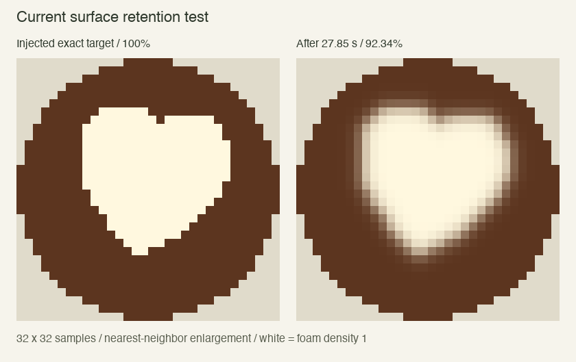
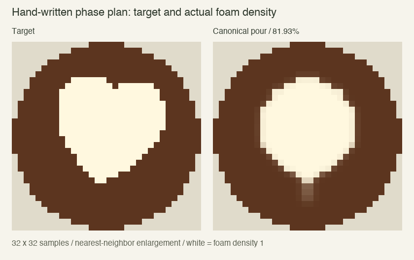
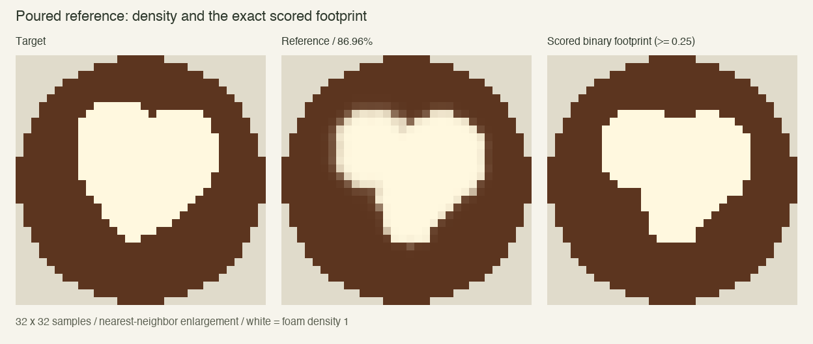
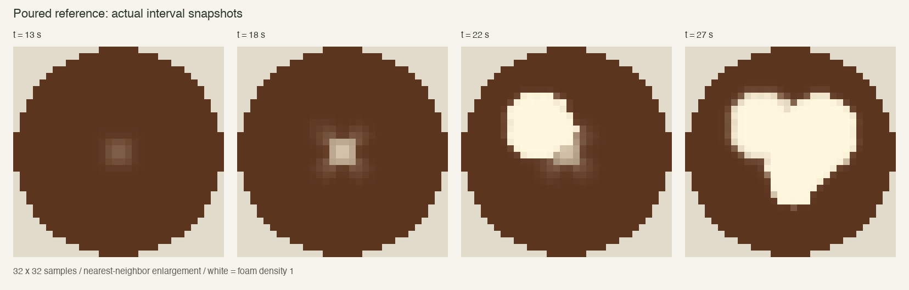

Reviewed poured reference: 86.96% IoU. 230.8 ml, 60.7°C, zero spills. No paid model ablations or held-out trials were run. Diagnosis and local recalibration only.
| Test | Original 96×96 | Canonical 32×32 |
|---|---|---|
| Target against itself | 100.00% | 100.00% |
| Shift +x by 1 cells | 94.76% | 85.38% |
| Shift +x by 2 cells | 89.87% | 73.38% |
| Shift +x by 4 cells | 81.02% | 54.49% |
| Scale to 90% | 81.08% | 81.33% |
| Scale to 110% | 82.54% | 81.69% |
Translations are exact integer-cell shifts along +x with zeros filled at the edge. Scaling re-rasterizes the same primitive around its target center. One cell at 32×32 is three times wider than at 96×96, so its shift penalties are naturally larger. No scoring formula fix was needed; the inconsistent grid resolutions were corrected. Exact target = 100%; ±10% scale changes retain about 81%. IoU can still reward a visually poor teardrop, as step 4 demonstrates.
This is a small cluster of white spots and diffuse residue. There are no joined lobes, notch or heart outline. The numerical field, not a cosmetic render, is shown.


Direct injection bypassed the pitcher and initialized exactly the target mask. Under nominal milk and no added forcing, overlap after the original 22.72-second duration was 96.86%. At the new 32×32 grid, it remains 92.34% after 27.85 seconds, the full new reference duration. Passive diffusion is not the main bottleneck. These are retention controls, not reference pours.


The deposition audit is different: with the new grid but old clipping behavior, the canonical plan injected 209.40 foam-density cell units, retained only 29.89, and discarded 179.51 (85.7%) at saturated cells. Its IoU was 14.94%. After the spreading correction, the exact same plan injects and retains 209.40 units, with zero saturation loss. These units audit deposition only; they are not ml and do not assert that semi-Lagrangian transport conserves foam perfectly.
Implemented the smallest local fix: a bounded surface layer distributes excess into nearest available cells, equally across equidistant cells. No target mask or shape name reaches this rule. Milk volume conservation is unchanged. Also normalized the source footprint by cell area and aligned deposition coordinates to cell centers. The old fixed-pixel coefficient gave different physical strengths at different resolutions; the new material scale uses the 32-cell baseline, so v0.4 physics differs from v0.3. It is an unvalidated material coefficient, not a measured microfoam property. Diffusion was not reduced. A real foam/crema density interface, conservative transport and jet entrainment are still future work.
The old 21 controls are listed below. High fill had fixed height/tilt/position. All six drawing pours shared one height and tilt. Positions jumped instantly between stationary pours. There was no independent lift, decreasing flow, or continuous center pull-through. It could search six spots, not the requested phase trajectory.
| Index | Control | Bounds |
|---|---|---|
| 0 | Pre-drawing fill volume | 180–210 ml |
| 1 | All drawing pours: one shared tilt | 45–85° |
| 2 | All drawing pours: one shared height | 10–40 mm |
| 3 | Pour 1: x | −0.75…0.75 |
| 4 | Pour 1: z | −0.75…0.75 |
| 5 | Pour 1: duration | 0.15–1.5 s |
| 6 | Pour 2: x | −0.75…0.75 |
| 7 | Pour 2: z | −0.75…0.75 |
| 8 | Pour 2: duration | 0.15–1.5 s |
| 9 | Pour 3: x | −0.75…0.75 |
| 10 | Pour 3: z | −0.75…0.75 |
| 11 | Pour 3: duration | 0.15–1.5 s |
| 12 | Pour 4: x | −0.75…0.75 |
| 13 | Pour 4: z | −0.75…0.75 |
| 14 | Pour 4: duration | 0.15–1.5 s |
| 15 | Pour 5: x | −0.75…0.75 |
| 16 | Pour 5: z | −0.75…0.75 |
| 17 | Pour 5: duration | 0.15–1.5 s |
| 18 | Pour 6: x | −0.75…0.75 |
| 19 | Pour 6: z | −0.75…0.75 |
| 20 | Pour 6: duration | 0.15–1.5 s |
The shared model/optimizer space is now 33 parameters: three high-fill controls and six continuous endpoints with independent x, z, height, tilt and duration. Tilt controls nominal flow; ≤25° turns it off. Interpolation at 60 Hz is fixed before execution. The initial high fill is centered and its nominal volume determines duration; high-pour travel at arbitrary positions can also be expressed using the endpoint segments.
| Index | Control | Bounds |
|---|---|---|
| 0 | fillVolumeML | 100…200 |
| 1 | fillHeightMM | 100…220 |
| 2 | fillTiltDegrees | 45…85 |
| 3 | segment1.x | -0.8…0.8 |
| 4 | segment1.z | -0.8…0.8 |
| 5 | segment1.heightMM | 10…180 |
| 6 | segment1.tiltDegrees | 0…85 |
| 7 | segment1.durationSeconds | 0.1…5 |
| 8 | segment2.x | -0.8…0.8 |
| 9 | segment2.z | -0.8…0.8 |
| 10 | segment2.heightMM | 10…180 |
| 11 | segment2.tiltDegrees | 0…85 |
| 12 | segment2.durationSeconds | 0.1…5 |
| 13 | segment3.x | -0.8…0.8 |
| 14 | segment3.z | -0.8…0.8 |
| 15 | segment3.heightMM | 10…180 |
| 16 | segment3.tiltDegrees | 0…85 |
| 17 | segment3.durationSeconds | 0.1…5 |
| 18 | segment4.x | -0.8…0.8 |
| 19 | segment4.z | -0.8…0.8 |
| 20 | segment4.heightMM | 10…180 |
| 21 | segment4.tiltDegrees | 0…85 |
| 22 | segment4.durationSeconds | 0.1…5 |
| 23 | segment5.x | -0.8…0.8 |
| 24 | segment5.z | -0.8…0.8 |
| 25 | segment5.heightMM | 10…180 |
| 26 | segment5.tiltDegrees | 0…85 |
| 27 | segment5.durationSeconds | 0.1…5 |
| 28 | segment6.x | -0.8…0.8 |
| 29 | segment6.z | -0.8…0.8 |
| 30 | segment6.heightMM | 10…180 |
| 31 | segment6.tiltDegrees | 0…85 |
| 32 | segment6.durationSeconds | 0.1…5 |
| Phase | Hand-written canonical command |
|---|---|
| High fill | Target 160 ml cup volume; 160 mm, 75° tilt, at center; nominal duration solved before execution. |
| Drop | Move to (0, −0.1), lower to 10 mm with flow off over 0.4 s. Actual height respects the rim. |
| Build circle | Ramp tilt to 85° over 0.3 s, then hold for 4 s. |
| Lift | Raise to 60 mm and reduce tilt to 40° over 0.2 s. |
| Pull through | Move straight along x=0 to z=0.65 over 1 s; lift to 100 mm and stop flow over 0.2 s. |
The canonical plan scores 81.93%, yet looks like a teardrop. The solver still lacks the hydrodynamic mechanism that splits a circle into lobes during a real pull-through. It would be misleading to call this canonical result a heart.

The reviewed reference adds explicit lobe placement: fill 150 ml; lower to (−0.27, −0.26); ramp/build left for 4.4 s; cross with flow reducing to zero over 0.1 s; ramp/build right at (0.27, −0.18) for 4.2 s; move to (0.03, 0.15) over 0.7 s; then pull along x=0.03 to z=0.58 while lifting to 80 mm and stopping flow over 1.3 s. Ninety local development candidates tested these motions before calibration. This makes a recognizable but slightly asymmetric heart with a blunt point.


The revealed milk object has exactly volumeML and startingTemperatureC. Flow multiplier/pulsation, foam retention, texture amplitude/phase, spread, mixing, damping and swirl coefficients are absent. This is tested for planning input; the same revealed object is used for reflection. Observed effects remain available in post-attempt feedback, and the raw-history ablation contains measured past traces rather than hidden coefficients.
Physics foam, target input, final feedback and scorer are all 32×32. The scorer rejects a mismatched grid. There is no hidden 16→96 conversion. Exact current planning payload.
The visually reviewed reference exceeded 50% before calibration began. A completed 1,001-candidate default-milk search reached 90.87% at best, but calibration retains the reviewed 86.96% reference. Thresholds are 78.26% IoU and 85.34% precision, 90% of the reference metrics rounded down. Serving, 190–240 ml, 55–65°C, ≤5 ml spills, no scorching and ≤120 s remain required.
An initial search stopped on a compiled action chunk shorter than 0.05 s; splitting durations into equal bounded chunks fixed it. The published run restarted and completed 1,001 candidates. Preflight and replay checks are extra local simulations. No model calls or v0.4 ablation/holdout runs occurred.
Validation: 50 tests passed, production build passed, and the saved calibration reference passed exact physical replay verification.
Raw evidence: original full trace · current full traces, scores and audits · 90-candidate development sweep · canonical plan and decoded actions.